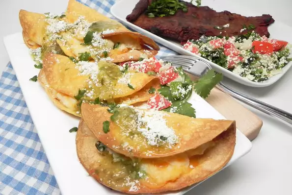

Air Fryer Tacos de Papa

Desciption
Crispy potato tacos made simple in the air fryer.
- 2 cups water
- 1 (4 ounce) package instant mashed potatoes (such as Idahoan® Buttery Homestyle®)
- ½ cup shredded Cheddar cheese
- 1 green onion, chopped
- ½ teaspoon ground cumin
- 10 corn tortillas
- 1 serving nonstick cooking spray
- ½ cup salsa verde
- ¼ cup crumbled cotija cheese